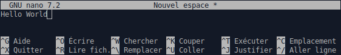

CM3 : Commandes Shell
Interagir avec un ordinateur
En soit, un ordinateur est un circuit électronique, qui pour une entrée donnée produit une sortie. Initialement, l'entrée était constituée d'une série d'interrupteurs, et la sortie d'une série de lampes (début XIXe siècle).
Au fur et à mesure que ces circuits électroniques grandissent (~1940), ces éléments d'entrés-sorties seront regroupés sur un poste de contrôle appelé "panneau de commande", "pupitre de commande", ou "console de commande", séparé du reste de l'ordinateur (mainframe).
Cartes perforées et impression
Cependant, les interrupteurs sont peu pratiques. On va très vite vouloir stocker les entrées (données et/ou instructions) afin de pouvoir facilement les rejouer, les transporter, et les archiver. Or, on sait déjà faire cela depuis au moins 1321 avec les cylindres à picots (e.g. boîtes à musiques), et depuis 1725 avec les cartes perforées (métiers à tisser, piano mécanique, etc). C'est ainsi qu'à partir de 1890, les cartes perforées seront utilisées par les tous premiers systèmes électroniques.
De même, les lampes sont peu pratiques. Si on a très vite utilisé des cadrans (tout en conservant des voyants), on souhaite pouvoir conserver les résultats sans avoir à les retranscrire à la main. On désire alors pouvoir imprimer les résultats, or cette technologie existe déjà depuis 1840 avec les télégraphes électriques. C'est ainsi qu'en 1925, le premier ordinateur avec imprimante voit le jour.
Clavier et CLI
Perforer les cartes manuellement, est peu pratique. Heureusement, dès 1901, les perforatrices intègre un clavier facilitant l'écritures des cartes. En eux-même les claviers ne sont pas nouveaux, avec les premières machines à écrire en 1808 et les télégraphes électriques en 1846.
Et si au lieu de perforer une carte au clavier, puis d'insérer la carte dans l'ordinateur, on intégrait directement le clavier à l'ordinateur ? C'est ainsi que les premiers claviers sur ordinateurs apparaissent vers 1941 (clavier numérique) et 1956 (clavier alpha-numérique).
Le clavier permet ainsi de saisir des instructions (commandes) directement sur l'ordinateur qui l'imprime puis en imprime les résultats (télétype). On se heurte toutefois à un double problème :
- comment indiquer que l'ordinateur est prêt à recevoir une nouvelle commande ?
- lors de l'impression, comment distinguer la commande exécutée de son résultat ?
On utilise alors une invite de commande (prompt) permettant d'indiquer que l'ordinateur a fini d'exécuter la commande précédente, et qu'une nouvelle commande peut être saisie. La commande est alors imprimée sur la même ligne que l'invite, ce qui permet de distinguer les commandes des résultats. La commande tenant sur une ligne, on parle alors de ligne de commande.
C'est ce qu'on appelle une interface en ligne de commande (CLI - Command Line Interface).
Fichiers exécutables
Si le clavier permet de saisir des données et des commandes directement sur l'ordinateur, il ne remplace pas pour autant les cartes perforées. En effet, pour la saisie d'entrées complexes et/ou répétés, le clavier reste peu efficace.
Toutefois, parallèlement à l'intégration des claviers, les ordinateurs gagnent progressivement en capacité de stockage interne, avec les bandes magnétiques en 1951 et les disques durs en 1956. Les cartes perforées (utilisées jusqu'en 1980-1990) seront progressivement remplacées par les bandes magnétiques, Internet (1970), les disquettes (1971), les CD/DVD (1982), clefs USB (2000), etc.
Il faudra toutefois attendre 1961 pour avoir les premiers systèmes de fichiers. Dès lors, il est possible d'écrire (sans écrans...), puis d'enregistrer, des instructions dans un fichier qu'on pourra ensuite exécuter sur demande. On parle alors de fichiers exécutables.
Écrans et TUI
Si la télévision date de 1926, il faudra attendre 1951 pour avoir les premiers écrans informatiques qui restent très limités. Ce n'est qu'en 1964 que les écrans permettent l'affichage du texte, remplaçant ainsi les imprimantes pour l'affichage. C'est au même moment qu'apparaissent les terminaux, une paire écran/clavier distants permettant à un utilisateur de se connecter à l'ordinateur (mainframe). Le mainframe continuait toutefois de disposer d'une console pour son administration.
Contrairement aux imprimantes qui étaient limitées à une écriture séquentielle, sans possibilité de revenir en arrière, les écrans permettent d'écrire à n'importe quelle position de leur surface. Il est ainsi possible de construire des interfaces plus ergonomiques et intuitives avec e.g. des formulaires de saisie, des menus, voire un panneau de commande virtuel. On parle alors d'interface textuelle/terminal (TUI - Text-based/Terminal User Interface).
La première souris apparaît en 1968, elle permet alors de naviguer en cliquant sur un élément de l'écran, au lieu d'utiliser les touches du clavier (tabulation, flèches).
Les lignes de commandes (CLI) conservent toutefois de nombreux avantages :
- on peut les enregistrer dans un fichier (script) afin d'en automatiser l'exécution.
- on bénéficie de toute la puissance d'un langage de programmation (variables, conditions, boucles, etc).
Fenêtres et GUI
Les interfaces graphiques modernes (GUI - Graphical User Interface) n'apparaissent qu'en 1973 avec un gestionnaire de fenêtre, permettant de manipuler des fenêtres à la souris et de les dessiner pixel par pixel.
Les terminaux vont progressivement disparaître au profit d'ordinateurs personnels équipés d'une interface graphique. Les émulateurs de terminal vont alors simuler un terminal au sein d'une fenêtre graphique, permettant de continuer d'administrer l'ordinateur via des lignes de commandes.
Les ordinateurs commencent à être reliés entre eux à partir de 1969, permettant leur administration à distance. Cependant, l'ouverture d'une session graphique à distance (1982) reste très coûteuse jusqu'à la démocratisation de la fibre (~2010). Même aujourd'hui, l'accès à distance s'effectue principalement en mode texte (CLI et TUI).
De nombreux ordinateurs ne disposent pas d'une GUI (e.g. serveurs, embarqués) afin de réduire les surfaces d'attaques, et d'en économiser les ressources (calculs, réseau, etc.).
Le Shell
Comme nous venons de le voir, les interfaces en ligne de commande restent encore très utilisées de nos jours, bien qu'anciennes (1956). Aujourd'hui on utilise le Shell (1971) qui est à la fois :
- le langage dans lequel on écrit les lignes de commandes.
- l'interpréteur qui lit et exécute les lignes de commandes.
Le Terminal sert alors d'interface graphique entre l'utilisateur et le Shell. Il permet d'écrire des lignes de commandes qui seront envoyées au Shell, puis d'en visualiser les résultats retournés par le Shell.
Commandes Shell
Une ligne de commande est une ligne de texte représentant une instruction à exécuter, e.g. :
En Shell, une ligne de commande commence par une commande qui représente l'instruction à exécuter, e.g. :
- : copy, copier un fichier.
- : move, déplacer un fichier.
- : remove, supprimer un fichier.
- : créer un fichier.
- : make directory/créer dossier.
- : rechercher un fichier.
La commande est potentiellement suivie d'un ou de plusieurs arguments, le tout séparé par des espaces :
Ainsi, lorsque le Shell interprète une ligne de commande, il découpe tout d'abord la ligne en utilisant les espaces comme séparateurs. Le premier élément est alors la commande à exécuter, et les éléments suivants, les arguments à lui passer en paramètre.
Les arguments (appel) sont les valeurs qu'on transmets aux paramètres (définition) d'une commande/fonction.
Si un argument contient un espace, il sera interprété comme deux arguments distincts. Pour éviter cela, il convient d'échapper l'espace, ou de le placer entre guillemets simples :
En soit, l'appel d'une commande s'apparente à l'appel d'une fonction, avec une commande à exécuter (≈ une fonction à exécuter) et des arguments passés en paramètres de la commande (fonction). La syntaxe est toutefois différente des appels de fonction dont vous avez l'habitude en R ou en Python :
- Ligne de commande Shell : .
- Appel d'une fonction python : .
La documentation
Lire la documentation
L'usage d'une commande est décrite par sa signature, qui utilise les notations suivantes :
| Syntaxe | Signification | Exemple |
|---|---|---|
| une valeur (à remplacer). | ||
| valeur facultative. | ou | |
| l'un ou l'autre. | ou | |
| un ou plusieurs arguments. | ||
| idem, mais séparés par une virgule. |
Une commande s'utilise dès lors très simplement :
- recopier la signature de la commande.
- remplacer les encadrés par la valeur souhaitée.
Par exemple, l'usage des commandes , , et peuvent être décrites ainsi :
- : supprimer (remove).
- : copier (copy).
- : déplacer (move).
- : si dossier (recursive).
- dossier dans lequel placer (target).
- nouveau chemin de (not target).
Les arguments préfixés par sont des options modifiant le comportement de la commande.
Les fichiers supprimés via sont supprimés définitivement. Ainsi, il est préférable d'utiliser la commande , afin de placer les fichiers dans la corbeille de l'utilisateur, permettant de restaurer les fichiers supprimés par erreurs.
Accéder à la documentation
L'accès à la documentation des commandes dépend de leur nature (cf ) :
- si (commande "normale") :
- si ou (interne au Shell) : .
La commande est une version simplifiée de et de .
Nous vous fournissons une cheat sheet donnant l'usage simplifié des commandes utilisées dans le cadre de cours.
Les fichiers
Chemins absolus
Sous Linux tous les fichiers sont, directement ou indirectement, contenus dans le dossier racine (root directory), noté :
Le chemin absolu (absolute path) identifie alors un fichier par son emplacement par rapport à la racine. C'est à dire, en partant de la racine, le chemin à emprunter pour atteindre ce fichier.
Par exemple, le chemin indique que pour atteindre le fichier , il faudra :
- partir de la racine .
- aller dans le dossier .
- aller dans le dossier .
- pour enfin atteindre .
📂 /
└── 📂 tmp
└── 📂 foo
├── 📄 faa
├── 📂 fee
└── 📄 fuu
Par convention, lorsque le chemin désigne un dossier, on le suffixera par , e.g. .
Répertoire de travail
+ tard
Commandes TUI
Il est aussi possible de lancer des applications TUI dans le terminal par le biais de commandes Shell. Par exemple, la commande lance un éditeur de texte dans le terminal :
Raccourcis claviers indiqués en bas de la fenêtre.

Raccourcis claviers indiqués en bas de la fenêtre.
Lorsqu'une commande s'exécute, elle prend le contrôle du terminal (clavier et écran). Le Shell ne reprend le contrôle du terminal qu'une fois son exécution terminée. Ainsi, pour revenir au Shell et entrer de nouvelles commandes, il faudra tout d'abord quitter l'application TUI.
Les interfaces TUI sont moins "standard", mais sont plus ergonomiques. Afin de faciliter votre apprentissage, nous essayerons de proposer des alternatives TUI ergonomiques lorsque possible.
Usage du terminal
Clavier/Souris
Le terminal reste compatible avec des sorties imprimantes : il reçoit les caractères de manière séquentielle, et les affiche les uns après les autres, ligne par ligne. Il intègre toutefois un mécanisme de défilement qui maintient à l'écran les dernières lignes écrites. Il conserve également un historique des lignes affichées, que l'on peut naviguer à l'écran à l'aide d'une barre de défilement.
Les raccourcis claviers du terminal sont préfixés par la touche majuscule (), permettant d'indiquer qu'ils doivent être interprétés par le terminal, au lieu d'être envoyés à la commande en cours d'exécution (ou au Shell). Le terminal permet par exemple de sélectionner un texte, puis de le copier/coller :
- au clavier : copier () et coller ().
- à la souris : clic-milieu ou clic-molette pour coller le texte sélectionné.
Attention à ne pas oublier la touche majuscule pour la copie. En effet, arrête la commande en cours d'exécution.
Caractères de contrôle
Le terminal est contrôlé par le biais de caractères de contrôle non-imprimables, transmis dans le même flux que les caractères à afficher. Ces caractères permettent alors d'effacer l'écran, déplacer le curseur, changer la couleur du texte, etc.
Certaines commandes Shell envoient des caractères de contrôle au terminal, comme :
- : efface l'écran.
- : réinitialise le terminal.
La commande quitte le Shell actuel. Si celui-ci est associé à un terminal graphique, son arrêt entraîne généralement la fermeture du terminal.
Buffer alternatif
Le Shell et les commandes n'écrivent pas directement sur l'écran du terminal, mais dans un tampon (buffer) qui est ensuite affiché à l'écran par le terminal. Le terminal dispose en réalité de deux buffers :
- le buffer principal : utilisé par le Shell et les commandes CLI.
- le buffer alternatif : utilisé par les commandes TUI.
Pour faire une analogie, imaginez deux imprimantes indépendantes dont une seule est affichée à l'écran. L'intérêt est alors, lorsqu'on quitte une application TUI, de retrouver l'écran tel qu'il était avant son lancement. Pour cela, l'application TUI écrit sur l'écran via le buffer alternatif, qu'on affiche à l'écran. Lorsqu'on quitte l'application TUI, on affiche alors le buffer principal, qui n'aura pas été modifié. On retrouve donc l'écran tel qu'il était avant le lancement de l'application TUI.
[OLD] Interagir avec le poste de travail
Le terminal
Utilisation du terminal
Recopier à la main des commandes est sources d'erreurs et de fautes de frappe. Il convient d'utiliser autant que possible les 3 fonctionnalités suivantes :
- Copier-coller le texte sélectionné ( et ).
⚠ arrête la commande en cours d'exécution.
💡 Le clic-milieu ou clic-molette de la souris copie/colle le texte sélectionné. - Auto-complétion des commandes et chemins ().
💡 affiche les différentes possibilités d'auto-complétion. - Historique : ou pour parcourir l'historique des lignes de commandes exécutées ( pour réexécuter).
💡 ou permettent de modifier la ligne de commande.
Le Shell
L'invite de commande
L'invite de commande (ou prompt) indique que l'utilisateur peut saisir une ligne de commande. Elle se termine généralement par ou , et peut être personnalisée. Par exemple indique :
- l'utilisateur () ;
- le nom de l'ordinateur () ;
- le répertoire actuel ().
💡 se lit "at" en anglais et indique un lieu. Par exemple une adresse mail signifie :
"le compte qui se trouve sur le serveur ".
"le compte qui se trouve sur le serveur ".
CLI vs TUI
Vous pouvez utiliser deux types d'interfaces au sein d'un terminal :
- CLI (Command-Line Interface) : lignes de commande.
- TUI (Terminal User Interface) : interactif, avec le clavier et la souris.
CLI (commande )

TUI (commande )

💡 Les interfaces TUI sont moins "standard", mais sont plus ergonomiques. Afin de faciliter votre apprentissage, nous essayerons de proposer des alternatives ergonomique lorsque possible.
Quelques commandes utiles
L'historique
- : affiche l'historique des dernières lignes de commandes exécutées.
- : réexécuter la dernière commande exécutée.
- : réexécute la dernière commande exécutée.
Les fichiers
Manipuler les fichiers
Sous Linux, il existe un ensemble de commandes standards permettant de manipuler les fichiers :
- (make directory) créer un dossier vide ( créer les dossiers parents si inexistant).
- créer un fichier vide.
- (remove) supprimer des fichiers.
- (copy) copier des fichiers.
- (move) déplacer des fichiers ( target).
- rechercher (récursivement) dans les fichiers correspondant à .
💡 Certaines de ces commandes acceptent les arguments suivants :
- (recursive) : si dossier.
- (target) : est le dossier dans lequel placer (ou sa copie).
- (not target) : est le nouveau chemin de (renomme le fichier lors de la copie/déplacement).
Éditer un fichier
permet d'éditer le fichier en ouvrant un éditeur interactif qu'on peut quitter via :
Raccourcis claviers indiqués en bas de la fenêtre.
Les chemins
Chemin relatif
Sous Linux, le dossier de travail (working directory), noté , désigne le dossier dans lequel on se trouve actuellement.
💡 Ce dossier est usuellement indiqué dans l'invite de commande :
demigda@demigda-Latitude-5400:/tmp/foo$
💡 La commande (print working directory) permet d'afficher le dossier de travail :
$ pwd /tmp/foo
💡 La commande (list) permet de lister le contenu du dossier (dossier de travail si non indiqué).
$ ls /tmp/foo 📄faa 📂fee 📄fii 📄fuu
💡 La commande (change directory) permet de se déplacer dans le dossier .
Le chemin relatif (relative path) identifie alors un fichier par son emplacement par rapport au dossier de travail, i.e. en partant du dossier de travail, le chemin à emprunter pour atteindre ce fichier. Ainsi, pour atteindre le fichier , à partir de , il faudra partir du dossier de travail , puis aller dans le dossier , pour enfin atteindre , donnant ainsi le chemin relatif : .
💡 représente le parent d'un dossier. Ainsi, à partir de , désigne le dossier .
Ensemble de chemins
Lorsqu'on souhaite manipuler plusieurs fichiers à la fois, e.g. via , , , etc. on préfère éviter d'avoir à écrire leurs chemins uns à uns. Pour cela on utilise les caractères de remplacements (wildcard) :
- : représente 0 à plusieurs caractères, e.g. : tous les fichiers d'extension ".txt".
- : représente 0 à plusieurs dossiers, e.g. : le fichier "foo.txt" dans un des sous dossiers.
- : représente une alternative, e.g. : "foo.txt" ou "faa.txt" dans le dossier courant.
💡 Afin d'éviter les erreurs dans la saisie d'un chemin, il est très vivement encouragé d'utiliser l'auto-complétion du shell.